!which pip/projects/dan1/data/Brickman/conda/envs/scvi-1.0.0/bin/pip!which pip/projects/dan1/data/Brickman/conda/envs/scvi-1.0.0/bin/pip%matplotlib inline
import numpy as np
import pandas as pd
import seaborn as sns
import scvi
import scanpy as sc
import scanpy.external as sce
import scFates as scf
import matplotlib.pyplot as plt
import warnings
from numba.core.errors import NumbaDeprecationWarning
warnings.simplefilter('ignore', category=NumbaDeprecationWarning)
warnings.simplefilter('ignore', category=FutureWarning)
warnings.simplefilter('ignore', category=UserWarning)/projects/dan1/data/Brickman/conda/envs/scvi-1.0.0/lib/python3.10/site-packages/scvi/_settings.py:63: UserWarning: Since v1.0.0, scvi-tools no longer uses a random seed by default. Run `scvi.settings.seed = 0` to reproduce results from previous versions.
self.seed = seed
/projects/dan1/data/Brickman/conda/envs/scvi-1.0.0/lib/python3.10/site-packages/scvi/_settings.py:70: UserWarning: Setting `dl_pin_memory_gpu_training` is deprecated in v1.0 and will be removed in v1.1. Please pass in `pin_memory` to the data loaders instead.
self.dl_pin_memory_gpu_training = (
/projects/dan1/data/Brickman/conda/envs/scvi-1.0.0/lib/python3.10/site-packages/tqdm/auto.py:21: TqdmWarning: IProgress not found. Please update jupyter and ipywidgets. See https://ipywidgets.readthedocs.io/en/stable/user_install.html
from .autonotebook import tqdm as notebook_tqdmadata = sc.read("../results/02_mouse_integration/scvi/adata.h5ad")
adataAnnData object with n_obs × n_vars = 2004 × 3000
obs: 'batch', 'experiment', 'technology', 'ct', 'ct_orig', 'stage', 'timepoint', 'n_genes_by_counts', 'total_counts', 'total_counts_mt', 'pct_counts_mt', 'n_genes', 'n_counts', 'batch_og', '_scvi_batch', '_scvi_labels'
var: 'gene_ids', 'gene_symbol', 'mt', 'n_cells_by_counts', 'mean_counts', 'pct_dropout_by_counts', 'total_counts', 'n_cells', 'highly_variable', 'means', 'dispersions', 'dispersions_norm', 'highly_variable_nbatches', 'highly_variable_intersection'
uns: '_scvi_manager_uuid', '_scvi_uuid', 'hvg', 'log1p'
obsm: 'X_mde_scVI', 'X_scVI'
layers: 'counts', 'scVI_normalized'USE_REP = 'X_scVI'# Ideally find 15 clusters
sc.pp.neighbors(adata, use_rep=USE_REP)
sc.tl.leiden(adata, resolution=0.8)2023-09-23 17:00:49.975107: W tensorflow/compiler/tf2tensorrt/utils/py_utils.cc:38] TF-TRT Warning: Could not find TensorRTfig, ax = plt.subplots(1, 2, figsize=[25, 5])
adata.obs.groupby(['ct', 'leiden']).size().unstack().plot(kind='bar', stacked=True, ax=ax[0]).legend(loc='right')
adata.obs.groupby(['leiden', 'ct']).size().unstack().plot(kind='bar', stacked=True, ax=ax[1]).legend(loc='right')<matplotlib.legend.Legend at 0x7f1a6a933fa0>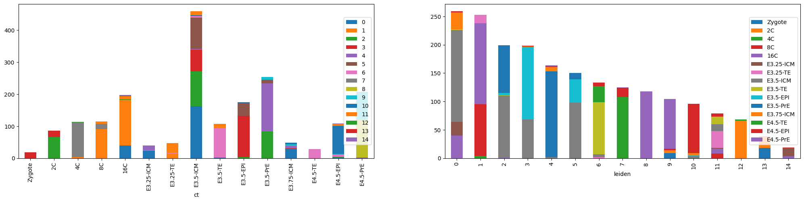
sc.tl.pca(adata)
sc.pl.pca(adata, color=['stage', 'ct'], frameon=False, ncols=2)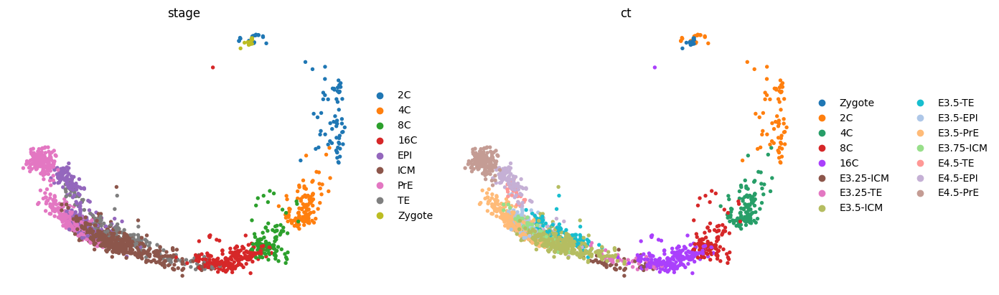
sc.tl.umap(adata)
sc.pl.umap(adata, color=['stage', 'ct'], frameon=False, ncols=2)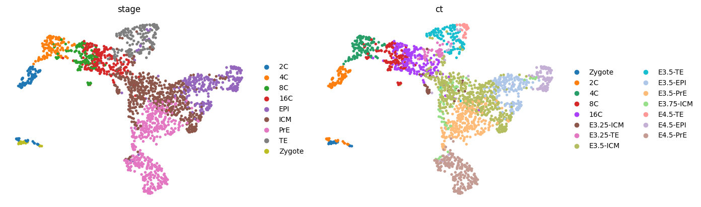
sce.tl.phate(adata, n_jobs=8)
sce.pl.phate(adata, color=['stage', 'ct'], frameon=False, ncols=2)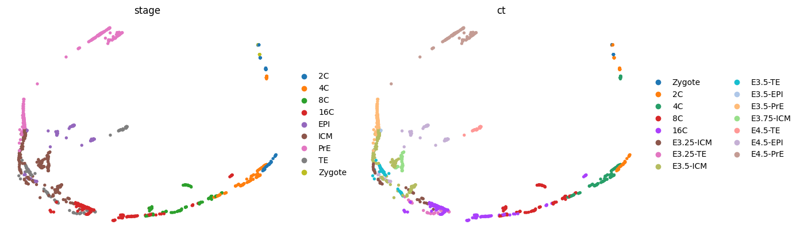
sc.tl.tsne(adata, n_jobs=8, perplexity=300)
sc.pl.tsne(adata, color=['stage', 'ct'], frameon=False, ncols=2)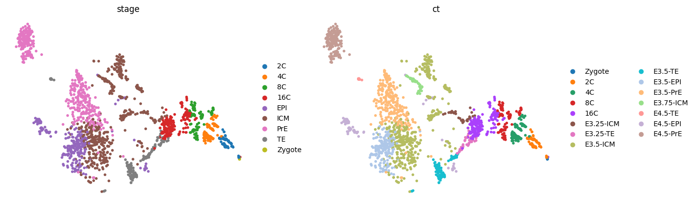
sc.tl.draw_graph(adata, n_jobs=8)
sc.pl.draw_graph(adata, color=['experiment', 'stage', 'ct'], frameon=False, ncols=3, wspace=0.4)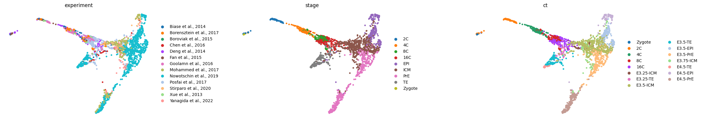
# Bug: https://github.com/scverse/scanpy/issues/2254
sc.tl.diffmap(adata)
adata.obsm["X_diffmap_"] = adata.obsm["X_diffmap"][:, 1:]
sc.pl.embedding(adata, "diffmap_", color=['stage', 'ct'], frameon=False, ncols=2)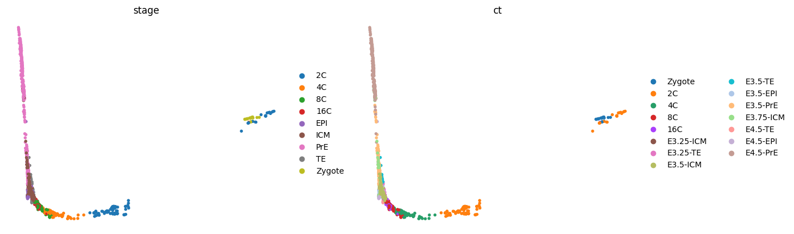
adataAnnData object with n_obs × n_vars = 2004 × 3000
obs: 'batch', 'experiment', 'technology', 'ct', 'ct_orig', 'stage', 'timepoint', 'n_genes_by_counts', 'total_counts', 'total_counts_mt', 'pct_counts_mt', 'n_genes', 'n_counts', 'batch_og', '_scvi_batch', '_scvi_labels', 'leiden'
var: 'gene_ids', 'gene_symbol', 'mt', 'n_cells_by_counts', 'mean_counts', 'pct_dropout_by_counts', 'total_counts', 'n_cells', 'highly_variable', 'means', 'dispersions', 'dispersions_norm', 'highly_variable_nbatches', 'highly_variable_intersection'
uns: '_scvi_manager_uuid', '_scvi_uuid', 'hvg', 'log1p', 'neighbors', 'leiden', 'pca', 'stage_colors', 'ct_colors', 'umap', 'tsne', 'draw_graph', 'experiment_colors', 'diffmap_evals'
obsm: 'X_mde_scVI', 'X_scVI', 'X_pca', 'X_umap', 'X_phate', 'X_tsne', 'X_draw_graph_fa', 'X_diffmap', 'X_diffmap_'
varm: 'PCs'
layers: 'counts', 'scVI_normalized'
obsp: 'distances', 'connectivities'sc.pp.neighbors(adata, use_rep=USE_REP)
sc.tl.diffmap(adata)
sc.tl.paga(adata, groups='ct')
sc.pl.paga(adata, color=['ct'], frameon=False, fontoutline=True)
sc.tl.draw_graph(adata, init_pos='paga', n_jobs=10)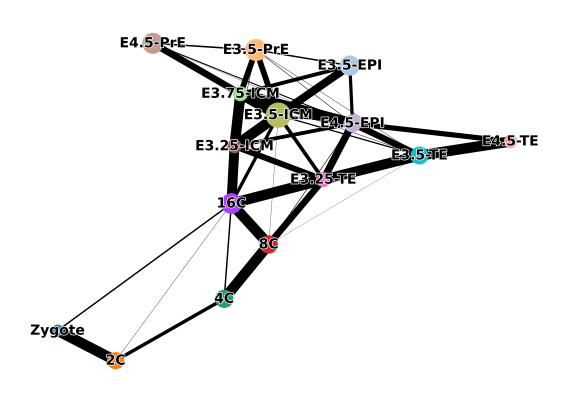
with plt.rc_context({"figure.figsize": (6, 6), "figure.dpi": (300)}):
sc.pl.paga(adata, color=['ct'], frameon=False, fontoutline=True)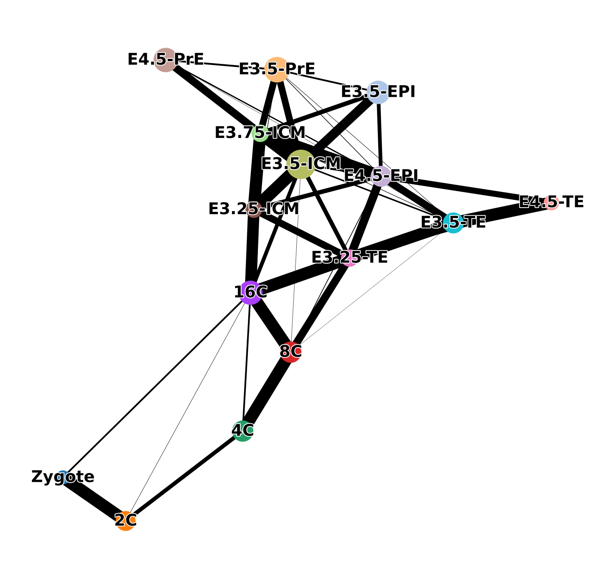
adata.uns['iroot'] = np.flatnonzero(adata.obs['ct'] == 'Zygote')[0]
sc.tl.dpt(adata)sc.pl.draw_graph(adata, color=['dpt_pseudotime', 'ct'], frameon=False, ncols=2, cmap='tab20')
sc.pl.draw_graph(adata, color=['experiment', 'ct'], frameon=False, ncols=2, cmap='tab20')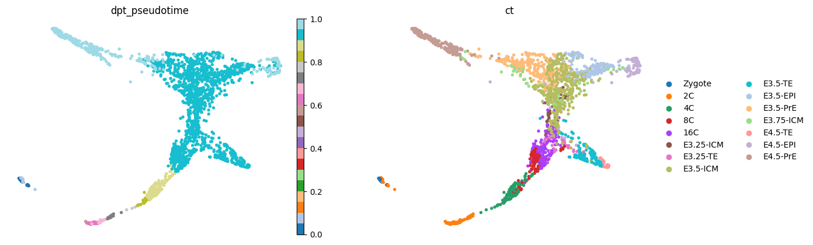
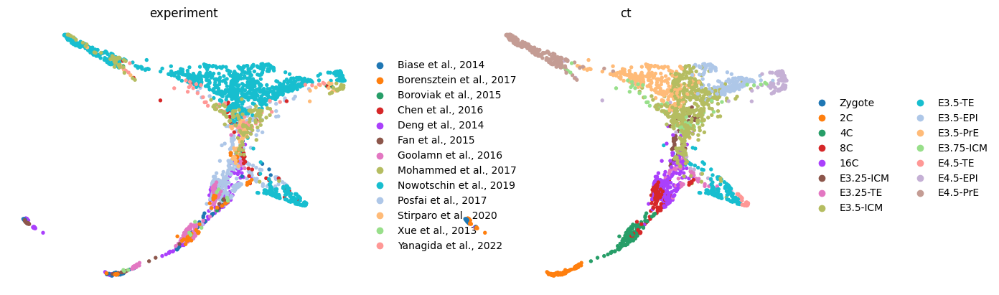
sc.pp.neighbors(adata, use_rep=USE_REP)
sc.tl.draw_graph(adata, n_jobs=10)sc.pl.draw_graph(adata, color=['dpt_pseudotime', 'ct'], frameon=False, ncols=2, cmap='tab20')
sc.pl.draw_graph(adata, color=['stage', 'timepoint'], frameon=False, ncols=2, cmap='tab20')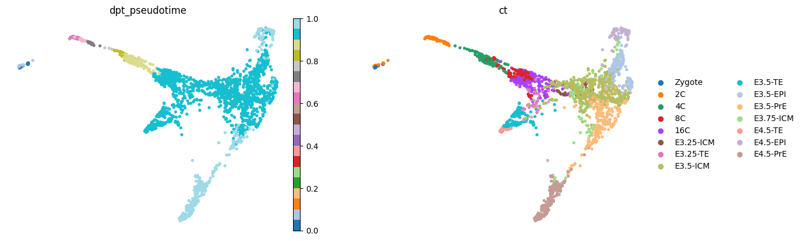
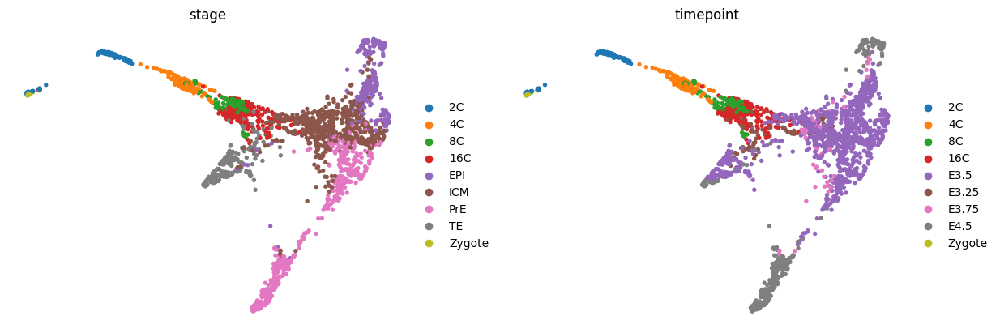
sig = scf.tl.explore_sigma(adata,
# Nodes=20,
Nodes=60,
use_rep="X_draw_graph_fa",
sigmas=[1000,500,400,300,200,100,50,10,1],
seed=42,plot=True)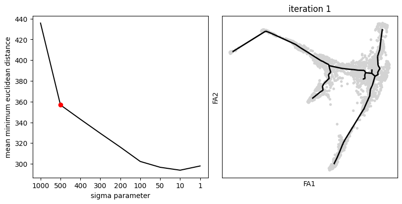
scf.tl.tree(adata,
# Nodes=30,
Nodes=60,
use_rep="X_draw_graph_fa",
method="ppt",
ppt_nsteps=10,
ppt_sigma=sig,
ppt_lambda=100,
seed=42)inferring a principal tree --> parameters used
60 principal points, sigma = 500, lambda = 100, metric = euclidean
fitting: 100%|███████████████████████████████████████████████████████████████████████████████████████████████████████████████████████████████████████████████████████████████████████████████████████████████████████████████████████████████████████████████████████████████████████████████████████████████████████████████████████| 10/10 [00:00<00:00, 265.16it/s]
not converged (error: 0.019733842722593525)
finished (0:00:00) --> added
.uns['ppt'], dictionnary containing inferred tree.
.obsm['X_R'] soft assignment of cells to principal points.
.uns['graph']['B'] adjacency matrix of the principal points.
.uns['graph']['F'] coordinates of principal points in representation space.scf.pl.graph(adata)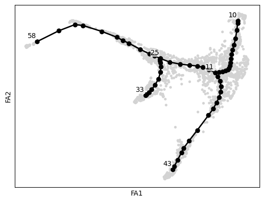
scf.tl.root(adata, 58)node 58 selected as a root --> added
.uns['graph']['root'] selected root.
.uns['graph']['pp_info'] for each PP, its distance vs root and segment assignment.
.uns['graph']['pp_seg'] segments network information.scf.tl.pseudotime(adata,n_jobs=10,n_map=10,seed=42)projecting cells onto the principal graph
mappings: 100%|███████████████████████████████████████████████████████████████████████████████████████████████████████████████████████████████████████████████████████████████████████████████████████████████████████████████████████████████████████████████████████████████████████████████████████████████████████████████████████| 10/10 [00:21<00:00, 2.14s/it]
finished (0:00:22) --> added
.obs['edge'] assigned edge.
.obs['t'] pseudotime value.
.obs['seg'] segment of the tree assigned.
.obs['milestones'] milestone assigned.
.uns['pseudotime_list'] list of cell projection from all mappings.scf.pl.trajectory(adata)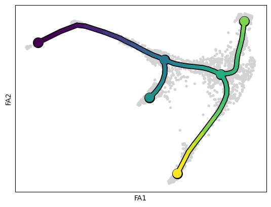
sc.pl.draw_graph(adata, color=['stage', 'seg', 'dpt_pseudotime', 't'], frameon=False, ncols=2, cmap='tab20')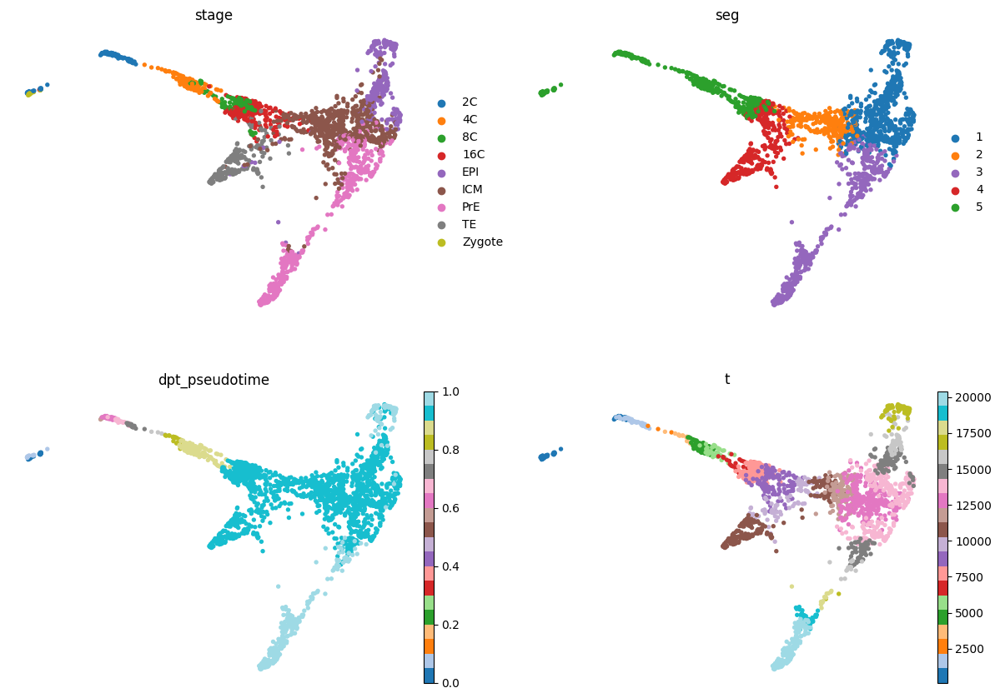
scf.tl.dendrogram(adata, n_jobs=8)
with plt.rc_context({"figure.figsize": (6, 6)}):
scf.pl.dendrogram(adata,color="seg")
scf.pl.dendrogram(adata,color="ct",legend_loc="on data",color_milestones=True,legend_fontoutline=True)Generating dendrogram of tree
segment : 100%|█████████████████████████████████████████████████████████████████████████████████████████████████████████████████████████████████████████████████████████████████████████████████████████████████████████████████████████████████████████████████████████████████████████████████████████████████████████████████████████| 5/5 [00:02<00:00, 2.18it/s]
finished (0:00:02) --> added
.obsm['X_dendro'], new embedding generated.
.uns['dendro_segments'] tree segments used for plotting.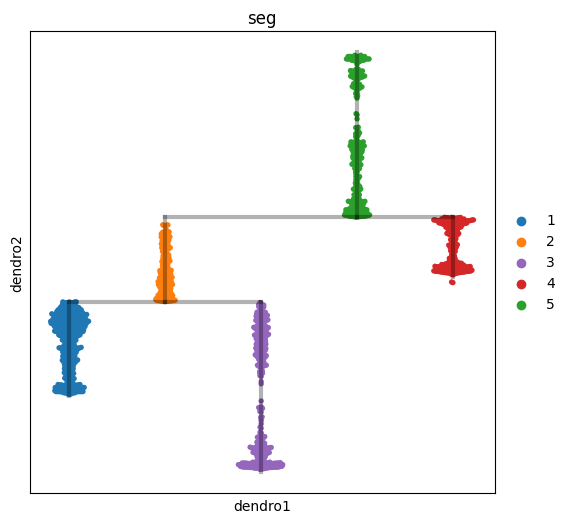
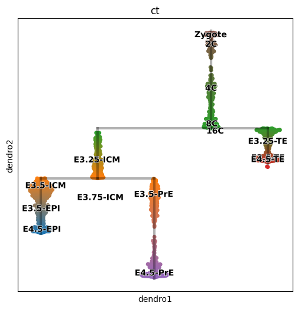
NOTE: doesn’t work, skipping
# import logging
# logging.getLogger("matplotlib.font_manager").setLevel(logging.ERROR)
# sc.pp.neighbors(adata, use_rep="X_scANVI")
# sce.tl.palantir(adata, use_adjacency_matrix=True, distances_key="distances")
# sc.tl.tsne(adata, n_pcs=2, use_rep='X_palantir_multiscale', perplexity=30)
# sc.pl.embedding(adata, basis='X_palantir_multiscale', color=['ct', 'stage'], frameon=False, ncols=2)def filter_markers(df: pd.DataFrame, n_genes: int = 5, upper: bool = False):
# significant only
df = df[
(df["is_de_fdr_0.05"])
& (df["bayes_factor"] > 3)
& (df["non_zeros_proportion1"] > 0.1)
& (df["lfc_median"] > 0)
]
comparisons = df.comparison.unique()
deg_df = {}
for comparison in comparisons:
cluster = comparison.split(" ")[0]
markers = (
df.query("comparison == @comparison")
.sort_values(by="lfc_median", ascending=False)
.head(n_genes)
)
deg_df[cluster] = (
markers.index.str.upper().tolist() if upper else markers.index.tolist()
)
return deg_dfvae = scvi.model.SCVI.load("../results/02_mouse_integration/scvi/")INFO File ../results/02_mouse_integration/scvi/model.pt already downloaded m_ct = vae.differential_expression(groupby="ct")
m_ct_filt = filter_markers(m_ct, n_genes=10)DE...: 100%|██████████████████████████████████████████████████████████████████████████████████████████████████████████████████████████████████████████████████████████████████████████████████████████████████████████████████████████████████████████████████████████████████████████████████████████████████████████████████████████████| 15/15 [00:16<00:00, 1.11s/it]pd.DataFrame.from_dict(m_ct_filt, orient='index').transpose()| Zygote | 2C | 4C | 8C | 16C | E3.25-ICM | E3.25-TE | E3.5-ICM | E3.5-TE | E3.5-EPI | E3.5-PrE | E3.75-ICM | E4.5-TE | E4.5-EPI | E4.5-PrE | |
|---|---|---|---|---|---|---|---|---|---|---|---|---|---|---|---|
| 0 | aa545190 | oog3 | obox8 | obox8 | a430060f13rik | gm24289 | gata3 | 1700021a07rik | tmprss2 | fbxw10 | gm19510 | rnase12 | s100a9 | calca | has2 |
| 1 | oosp3 | au016765 | gm4850 | gm21731 | gm11544 | gm24920 | gm24920 | dglucy | adh1 | nkain4 | foxa2 | iglv2 | fasl | nphs1os | clic5 |
| 2 | au016765 | oosp3 | b020004c17rik | gm11544 | xkr9 | gm24616 | gm24289 | gm807 | slc15a2 | lefty2 | lefty2 | nnmt | cald1 | gm12690 | spink1 |
| 3 | oog3 | gm4850 | oog3 | a430060f13rik | dio1 | xkr9 | gm5907 | aldh3a1 | epn3 | mal | sox17 | c330004p14rik | rhox6 | stmn2 | clic6 |
| 4 | obox2 | omt2a | gm36976 | b020004c17rik | gm33508 | gm25328 | tmprss2 | nkx6-2 | cdx2 | gm26564 | dkk1 | gm30717 | h19 | col18a1 | habp2 |
| 5 | c87499 | aa545190 | omt2a | af067063 | gm24289 | snord35a | cryab | crygd | gata3 | cobl | bmper | gm6284 | elf5 | fgf15 | tfec |
| 6 | e330034g19rik | tcl1b5 | d7ertd443e | d7ertd443e | gm5435 | cck | gm6334 | sox2 | dppa1 | cd3g | lmo2 | gpx8 | hpgd | gm26564 | rhox6 |
| 7 | gm43269 | tcl1b4 | gm21731 | gm13339 | gm12446 | gm25636 | au021092 | mal | id2 | myh13 | f2r | gm13339 | ankrd1 | ctsw | ttr |
| 8 | tcl1b4 | c87499 | gdap1 | dynap | dynap | dio1 | arg2 | lmo2 | cryab | gm12688 | serpinh1 | p3h2 | slc16a3 | prss50 | chst15 |
| 9 | oosp2 | oosp2 | spz1 | xkr9 | snord35a | gm33508 | nat8 | gm5662 | serpinb6b | gm807 | flrt3 | stfa1 | tmprss2 | c330004p14rik | p3h2 |
sc.pl.dotplot(adata, m_ct_filt, groupby='ct', dendrogram=False, standard_scale='var')
sc.pl.matrixplot(adata, m_ct_filt, groupby='ct', dendrogram=False, standard_scale='var')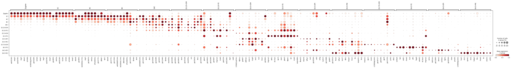
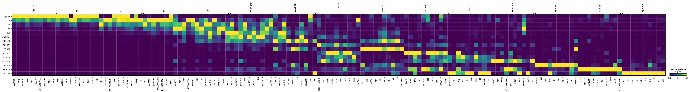
sc.tl.embedding_density(adata, basis='draw_graph_fa', groupby='ct')
sc.pl.embedding_density(adata, basis='draw_graph_fa', key='draw_graph_fa_density_ct')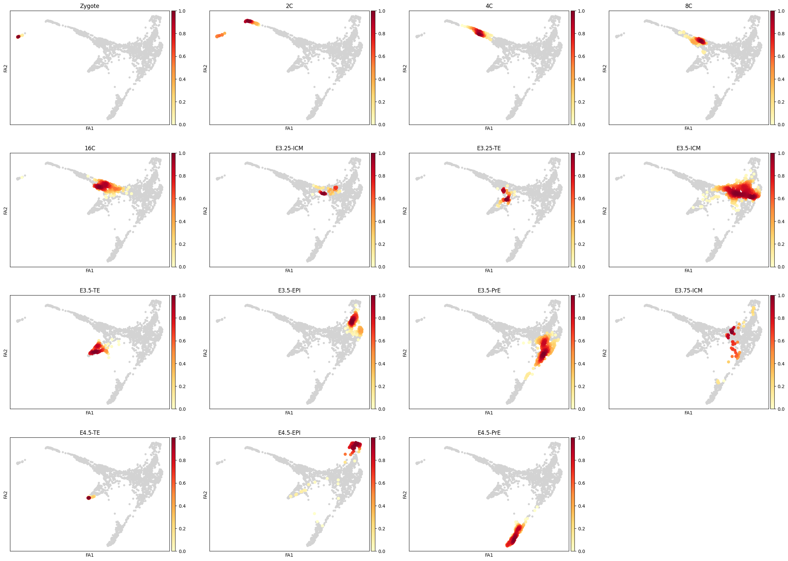
lineage_markers = pd.read_excel("../data/external/mouse_lineage_markers.xlsx", sheet_name="Sheet1").fillna('')
lineage_markers| Zygote | 2C | 4C | 8C | 16C | TE | ICM | PrE | EPI | |
|---|---|---|---|---|---|---|---|---|---|
| 0 | Zswim3 | Zscan4a | Sin3a | Pou5f1 | Pou5f1 | Cdx2 | Pou5f1 | Gata6 | Pou5f1 |
| 1 | Trim28 | Zscan4b | Clock | Nanog | Nanog | Gata3 | Gata6 | Gata4 | Nanog |
| 2 | Padi6 | Zscan4c | Sox21 | Sox2 | Sox2 | Gata2 | Nanog | Sox7 | Sox2 |
| 3 | Zscan4d | Carm1 | Cdx2 | Cdx2 | Eomes | Tfcp2l1 | Sox17 | Fgf4 | |
| 4 | Zscan4f | Yap1 | Esrrb | Lats2 | Dppa3 | Pdgfra | Klf2 | ||
| 5 | Zfp352 | Eifg1 | Prdm14 | Tfap2c | Esrrb | Dab2 | |||
| 6 | Usp17ld | Prdm14 | Tfap2c | Prdm14 | |||||
| 7 | Rxra | Gata3 | |||||||
| 8 | Tmem92 | Gata2 | |||||||
| 9 | Pramef25 | ||||||||
| 10 | Dux |
for stage, genes in lineage_markers.to_dict('list').items():
common_genes = adata.var_names.intersection([str.lower(g) for g in genes if g != ''])
# print(stage, common_genes)
sc.pl.draw_graph(adata, color=['stage', *common_genes], title=[stage, *common_genes],
groups=stage, legend_loc=None, frameon=False, ncols=len(common_genes) + 1)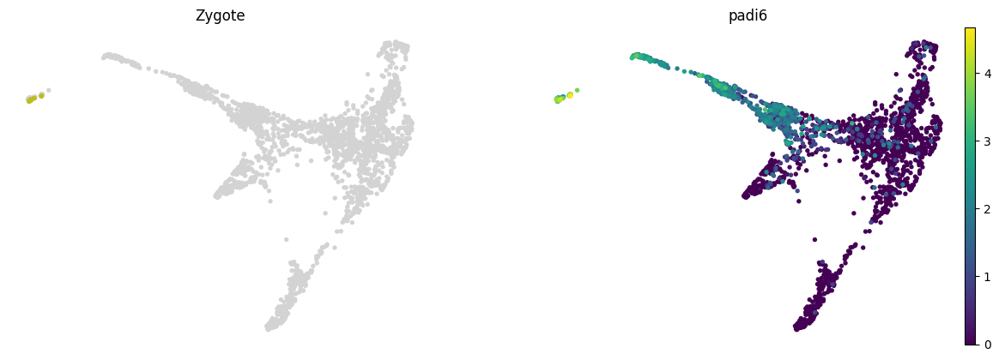
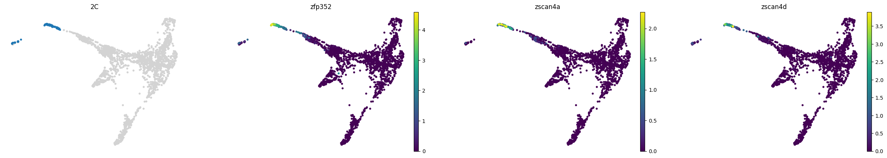
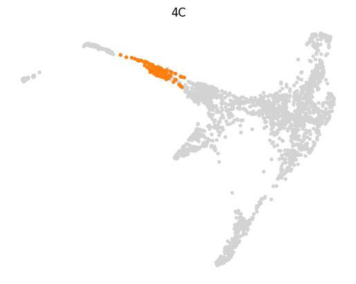
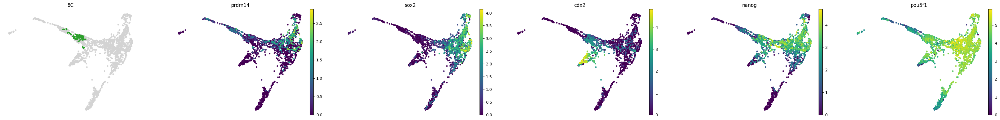
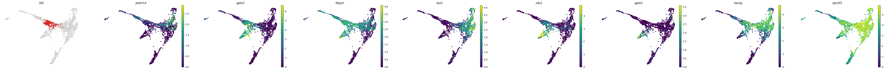
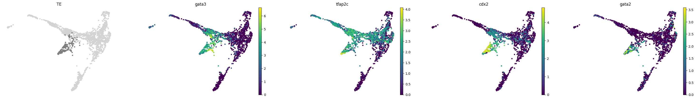
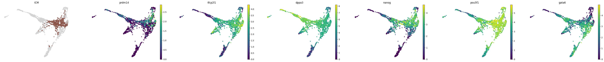
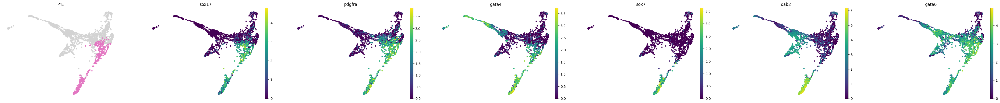
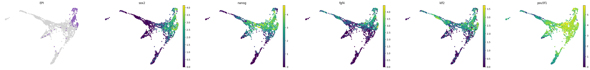
adata.write("../results/03_mouse.processed.h5ad")scGen returns imputed counts only. In this case we are not able to run DEGs because we need to have normalized counts. The predict function also won’t work because we don’t have any perturbation in the dataset.
import scgenmscgen = scgen.SCGEN.load("../results/02_mouse_integration/scgen/")corrected_adata = mscgen.batch_removal()
corrected_adatasc.pp.neighbors(corrected_adata, use_rep='corrected_latent')
sc.tl.draw_graph(corrected_adata)sc.pl.draw_graph(corrected_adata, color=['ct', 'Stage'], wspace=0.4, frameon=False)sc.tl.umap(corrected_adata)
sc.pl.umap(corrected_adata, color=['batch', 'Stage'], wspace=0.4, frameon=False)from rich import print
from scib_metrics.benchmark import Benchmarkerbm = Benchmarker(
adata,
batch_key="batch",
label_key="ct",
embedding_obsm_keys=["X_pca", "X_scVI", "X_scANVI", "X_scgen"],
n_jobs=-1,
)
bm.benchmark()bm.plot_results_table(min_max_scale=False)from pysankey import sankey
%run ../scripts/helpers.pysc.tl.dendrogram(adata, groupby="leiden", key_added="dendrogram_leiden")
sc.tl.dendrogram(adata, groupby="ct", key_added="dendrogram_ct")with plt.rc_context({"figure.figsize": [20, 20]}):
sc.pl.correlation_matrix(adata, groupby="ct", show_correlation_numbers=True)_ = sc.pl.dendrogram(adata, groupby="ct", orientation='top')def get_predictions(lvae: scvi.model.SCANVI, threshold: float = 0.85):
df = pd.DataFrame(zip(predictions.idxmax(axis=1), predictions.max(axis=1)), columns=['predicted', 'score'])
df['predicted_filt'] = 'Unknown'
df.loc[df.score >= threshold, 'predicted_filt'] = df.loc[df.score >= threshold, 'predicted']
df['uncertainty'] = np.maximum(1 - df.score, 0)
return dflvae = scvi.model.SCANVI.load("../results/02-mouse/")
adata.obs[["predicted", "score", "predicted_filt", "uncertainty"]] = get_predictions(lvae).valuessc.pl.draw_graph(adata, color=['ct', 'predicted', 'uncertainty'], frameon=False, ncols=3)df = adata.obs.groupby(["ct", "predicted"]).size().unstack(fill_value=0)
norm_df = df / df.sum(axis=0)
plt.figure(figsize=(8, 8))
_ = plt.pcolor(norm_df)
_ = plt.xticks(np.arange(0.5, len(df.columns), 1), df.columns, rotation=90)
_ = plt.yticks(np.arange(0.5, len(df.index), 1), df.index)
_ = plt.colorbar()
plt.xlabel("Predicted")
plt.ylabel("Observed")# Stats
from sklearn.metrics import balanced_accuracy_score
balanced_accuracy_score(adata.obs["ct"].values, adata.obs["predicted"].values)